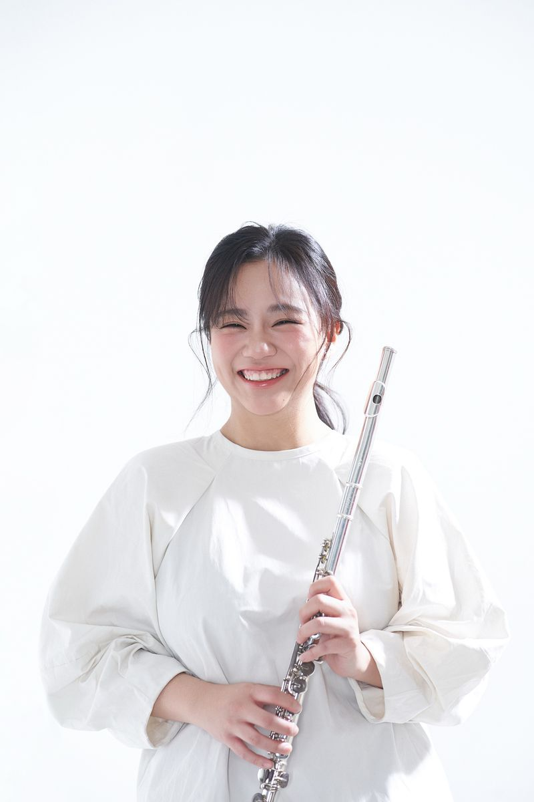
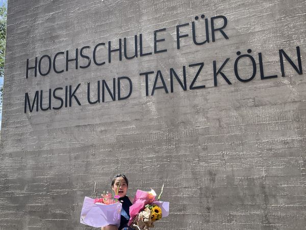
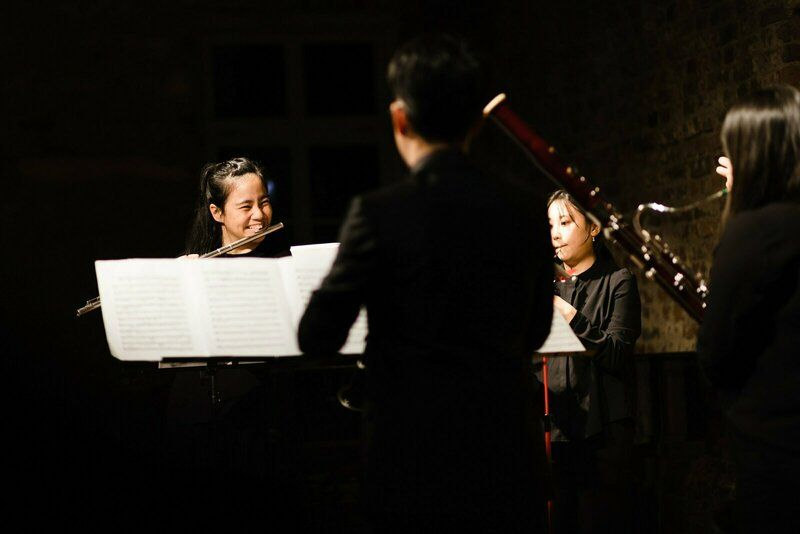

波恩、科隆及在线长笛课程 在长笛上，
找到你的声音。
为儿童、青少年与成人提供一对一长笛课程，从第一个音到进阶曲目。由毕业于科隆音乐舞蹈学院的长笛演奏家 Suhsuan Wang 亲自授课。
- 音乐硕士科隆音乐舞蹈学院
- 不限年龄初学到进阶
- EN · DE · 中文三语教学
- 30 · 45 · 60每堂课分钟数


关于
Suhsuan Wang，长笛演奏家与教师
Suhsuan Wang 是来自台湾的长笛演奏家，现居波恩与科隆一带。她毕业于德国科隆音乐舞蹈学院，专精长笛演奏、室内乐与巴洛克音乐，现以中文、英文或德文教授各年龄层的学生。
音乐硕士
长笛演奏 · 室内乐 · 巴洛克音乐
音乐学士
长笛演奏
德国科隆音乐舞蹈学院
课程
一对一教学，为你量身安排
对象
- 儿童
- 小手可以从弯头长笛开始。
- 青少年
- 依自己的步调学习音色、技巧与曲目。
- 成人
- 从零开始、重拾长笛或进阶学习。
课程长度
- 30 分钟
- 45 分钟
- 60 分钟
费用请洽询。
地点
- 波恩
- 面授
- 科隆
- 面授
- 在线
- 视频
如何开始
送出询问
上课对象、程度与地点。
第一堂课
互相认识，一起订定目标。
固定上课
在波恩、科隆或在线安排固定时段。
- 预约第一堂课

音乐
舞台上
除了教学，Suhsuan 也以长笛演奏家的身分演出，专注于室内乐与巴洛克曲目。
音乐会与工作室的点滴都会分享在 Instagram 上。
追踪 Instagram (@ateliersufle.music)常见问题
你可能想知道
课程适合哪些人？
儿童、青少年与成人，从零基础到进阶都适合。年纪小的孩子可以使用较好握持的弯头长笛开始学习。
在哪里上课？
在波恩与科隆面授，或透过视频在线上课。
使用哪些语言授课？
中文（普通话）、英文或德文。
一堂课多长？
30、45 或 60 分钟，依年龄、程度与目标而定。
学费是多少？
费用请洽询，欢迎透过下方表单留言。
Suhsuan 的学经历？
她拥有德国科隆音乐舞蹈学院的长笛演奏、室内乐与巴洛克音乐硕士学位，以及长笛演奏学士学位。
如何预约第一堂课？
请使用下方表单，或写信至 hsuan41213@gmail.com。Suhsuan 会以电子邮箱回复，安排第一堂课。